概述：获取网络连接状态调用接口分析
环境状况描述：windows 10 x 64
使用 COM 对象查看网络连接状态
// INetworkListManager.cpp : This file contains the 'main' function. Program execution begins and ends there.
//
#include <iostream>
#include <windows.h>
#include <netlistmgr.h>
#pragma comment(lib, "ole32.lib")
static INetworkListManager* getNetworkList(IUnknown** ppUnknown)
{
const GUID CLSID_NetworkListManagerXp = { 0xdcb00c01, 0x570f, 0x4a9b, { 0x8d, 0x69, 0x19, 0x9f, 0xdb, 0xa5, 0x72, 0x3b } };
const IID IID_INetworkListManagerXp = { 0xdcb00000, 0x570f, 0x4a9b, { 0x8d, 0x69, 0x19, 0x9f, 0xdb, 0xa5, 0x72, 0x3b } };
BOOL bOnline = TRUE;
HRESULT hresult = CoCreateInstance(CLSID_NetworkListManagerXp, NULL, CLSCTX_ALL, IID_IUnknown, (void**)ppUnknown);
if (!(SUCCEEDED(hresult)))
return nullptr;
INetworkListManager* pNetworkListManager = NULL;
if (*ppUnknown)
hresult = (*ppUnknown)->QueryInterface(IID_INetworkListManagerXp, (void**)&pNetworkListManager);
if (SUCCEEDED(hresult))
return pNetworkListManager;
return nullptr;
}
static BOOL checkIsNetwork(INetworkListManager* pNetworkListManager)
{
static DWORD s_lastCheck = 0;
DWORD lastCheck = ::GetTickCount();
if (lastCheck - s_lastCheck < 15000)
return -1;
s_lastCheck = lastCheck;
if (!pNetworkListManager)
return -1;
HRESULT hresult = E_FAIL;
BOOL isOnline = FALSE;
VARIANT_BOOL isConnect = VARIANT_FALSE;
if (pNetworkListManager)
hresult = pNetworkListManager->get_IsConnectedToInternet(&isConnect);
if (SUCCEEDED(hresult))
isOnline = (isConnect == VARIANT_TRUE) ? TRUE : FALSE;
return isOnline;
}
int main()
{
CoInitialize(NULL);
// system("pause");
#if 1
VARIANT_BOOL bIsConnected;
INetworkListManager *pNetworkListManager = NULL;
HRESULT hr = CoCreateInstance(CLSID_NetworkListManager, NULL,
CLSCTX_ALL, IID_INetworkListManager,
(LPVOID *)&pNetworkListManager);
hr = pNetworkListManager->get_IsConnectedToInternet(&bIsConnected);
std::cout << "IsConnected:" << bIsConnected << std::endl;
#endif
#if 0
IUnknown* pUnknown = nullptr;
static INetworkListManager* pNetworkListManager1 = nullptr;
if (!pNetworkListManager1)
pNetworkListManager1 = getNetworkList(&pUnknown);
BOOL checkNetwork = checkIsNetwork(pNetworkListManager1);
std::cout << "IsConnected:" << checkNetwork << std::endl;
#endif
system("pause");
}
调用分析
分析过程：调用时可以看到会进入 netprofm 中的 CPubINetworkListManager::get_IsConnectedToInternet 接口，又在该接口当中创建了 COM 对象通过 RPC 远程调用到服务端的 RPC 接口。
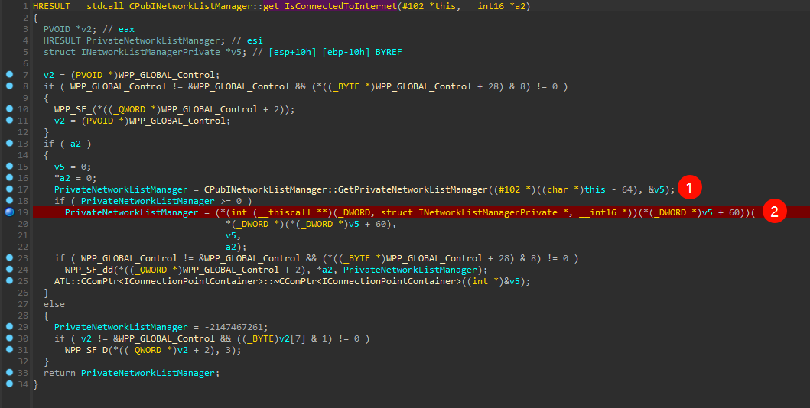
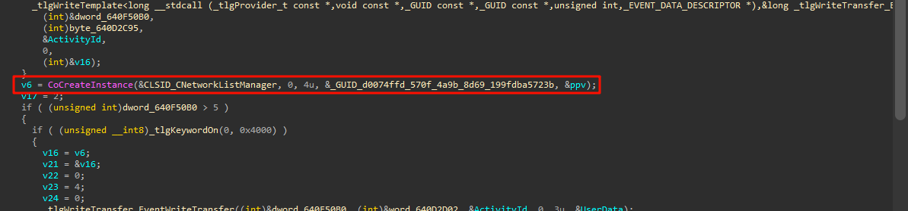
这里可以在 GetPrivateNetworkListManager 中看到创建的 COM 对象的 CLSID 和 IID。在注册表查询相关 COM 组件。查询结果如下所示：
- 通过 CLSID 查询 com 组件的文件
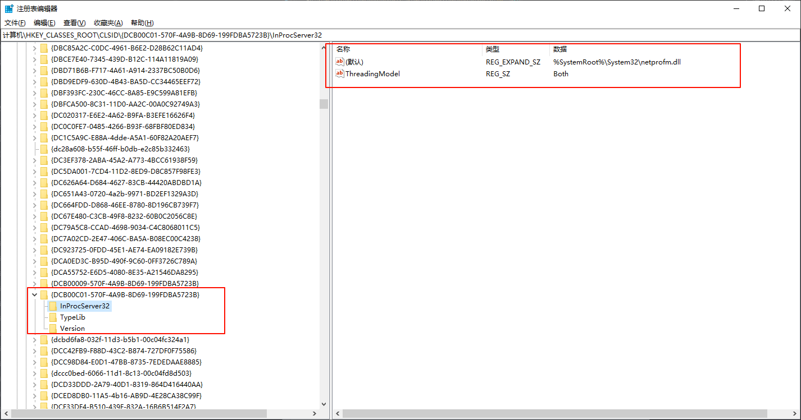
- 接着使用 OLEView 查看具体的接口对象，可以看到为
INetworkListManager。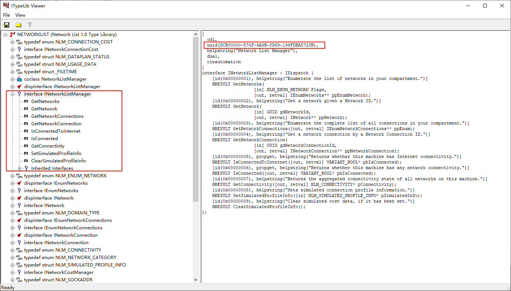
- 在 APPID 中查看 netprofm 注册的应用
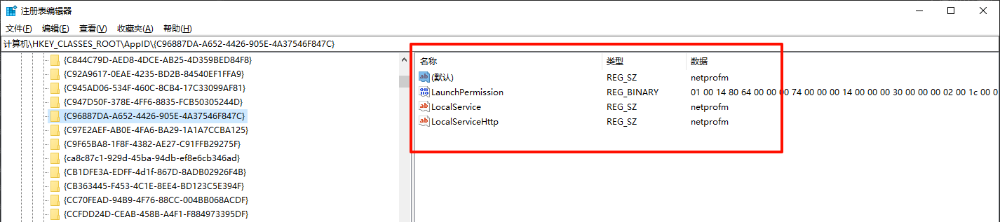
可以看到 netprofm 是作为本地服务的，服务名就是 netprofm。
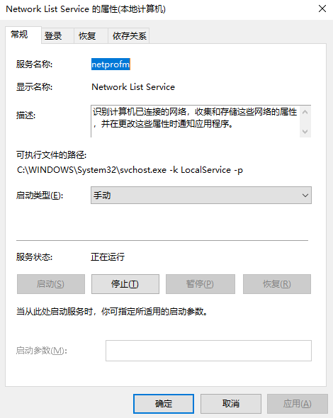
分析 netprofm 服务
这里要做的就是使用 Windbg] 调试，然后查看可能相关的 dll 或者接口
相关 DLL
分析思路
这里由于我第一次调试也没有什么经验，后来又大佬帮助，所以整个思路我都补充一下，尽量详细一点，这里补充下服务端调用分析思路。
- 使用 windbg 调试可以看到有一个 netprofmsvc 的 dll
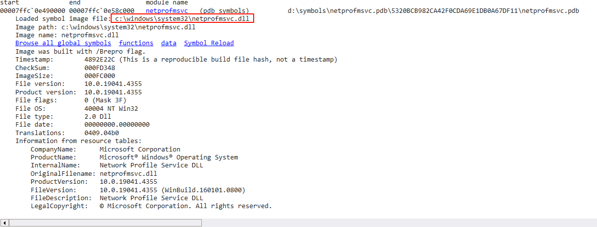
- 查看其接口都有哪些，然后在可能会被调用的接口上打断点
x /D /f netprofmsvc!*Get* - 使用客户端查询，看断点是否会触发
稍微看下，差不多也能猜到基本上都在 CImplINetworkListManager 类提供的接口中，打断点调试 CImplINetworkListManager::IsConnectedToInternet。剩下的就是具体的调试过程了。具体含义如下所示，
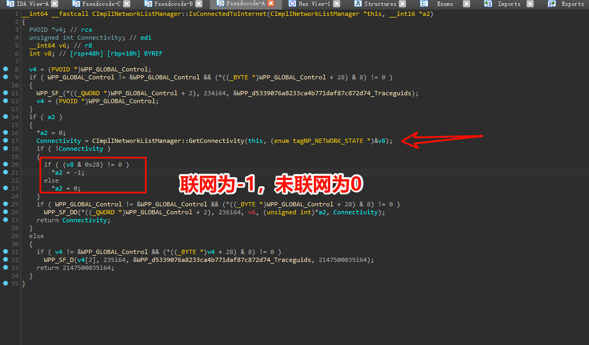
CImplINetworkListManager::GetConnectivity 往后的执行逻辑感兴趣的可以调试看看。
拓展阅读
这里补充一个查询网卡 GUID 的堆栈，主要记录拓展以下这里查询的逻辑。 调用堆栈如下所示：
[0x0] NSI!NsiGetParameter 0xa4ee6fdee8 0x7ffc5b1b789f
[0x1] IPHLPAPI!InternalGetBestInterface+0xcf 0xa4ee6fdef0 0x7ffc5b1b3c24
[0x2] IPHLPAPI!GetBestInterface+0x44 0xa4ee6fdf90 0x7ffc0e4999d4
[0x3] netprofmsvc!GetBestInterfaceGuid+0xa4 0xa4ee6fdff0 0x7ffc0e499636
[0x4] netprofmsvc!NetworkPropertyMaps::InternalGetConnectivity+0x86 0xa4ee6fe0d0 0x7ffc0e49cd92
[0x5] netprofmsvc!CImplINetworkListManager::GetConnectivity+0x132 0xa4ee6fe210 0x7ffc0e49626c
[0x6] netprofmsvc!CImplINetworkListManager::IsConnectedToInternet+0x6c 0xa4ee6fe270 0x7ffc5c7fa2d3 相关知识
先调试记录一下分析过程：
- 添加断点，在
netprofmsvc!GetBestInterfaceGuid之后打断点，这里主要是为了查看函数执行结果cpp__int64 __fastcall GetBestInterfaceGuid(struct _GUID *_guid)
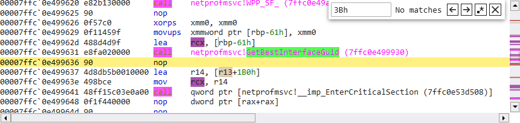
这里可以看到传入的参数为 rcx，指向的位置为rbp-61h。在断点处查看这个变量即可，如下所示：
dt ntdll!_GUID rbp-61h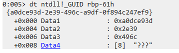
这里我们就获取到了一个网卡的 GUID 为{a0dce93d-2e39-496c-a9df-0f894c247ef9}，下一步就是在注册表中进行查询具体的网络接口。
2. 查询网卡项（这一步可以忽略）
注册表位置：计算机\HKEY_LOCAL_MACHINE\SYSTEM\CurrentControlSet\Control\Class\{4d36e972-e325-11ce-bfc1-08002be10318} 这个位置是固定的，需要在这个注册表项下根据第一步的 GUID 查询具体的键值项。查询结果如下所示：
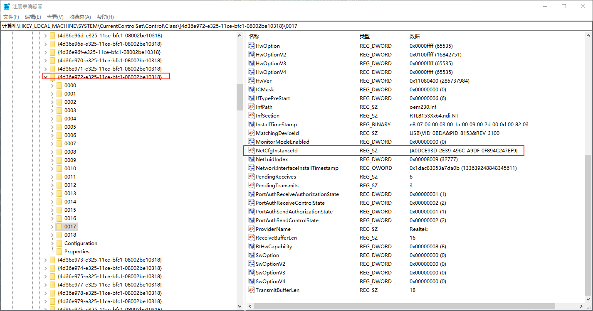
3. 根据 GUID 查询网络适配器 注册表位置：SYSTEM\\CurrentControlSet\\Control\\Network\\{4D36E972-E325-11CE-BFC1-08002BE10318}\\{GUID}
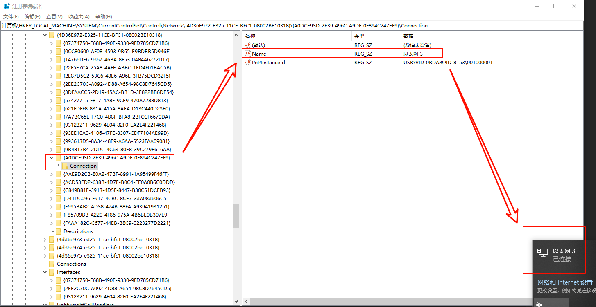
补充
相关断点
bp netprofmsvc!CImplINetworkListManager::IsConnectedToInternet
bp netprofmsvc!NetworkPropertyMaps::InternalGetConnectivity
bp nsi!NsiGetParameter
bp RPCRT4!Invoke+0x73
bu RPCRT4!Invoke+0x73 "u r10"
bu RPCRT4!Invoke+0x73-5 "r ;gc"对于 RPC 远程调用接口的查看可以参考文章： 【调试技术】各种场景下调试汇总 No newline at end of file